title: linux
date: 2021-05-15 21:27:21
tags:
目录是文件的一种组织方式
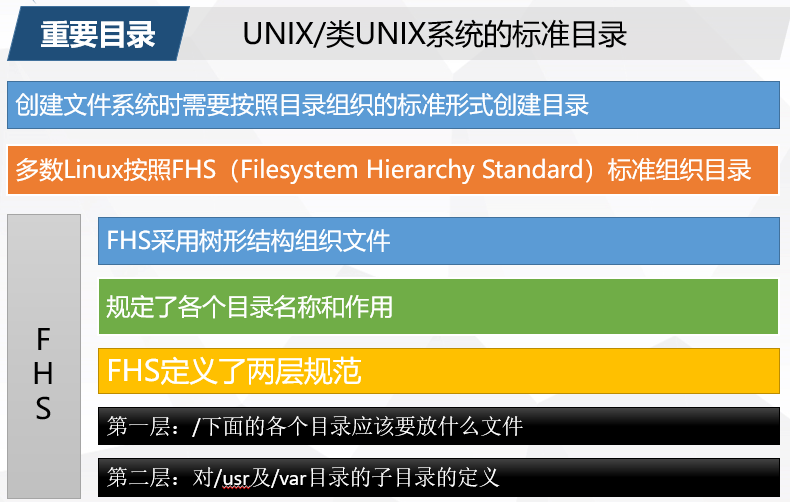
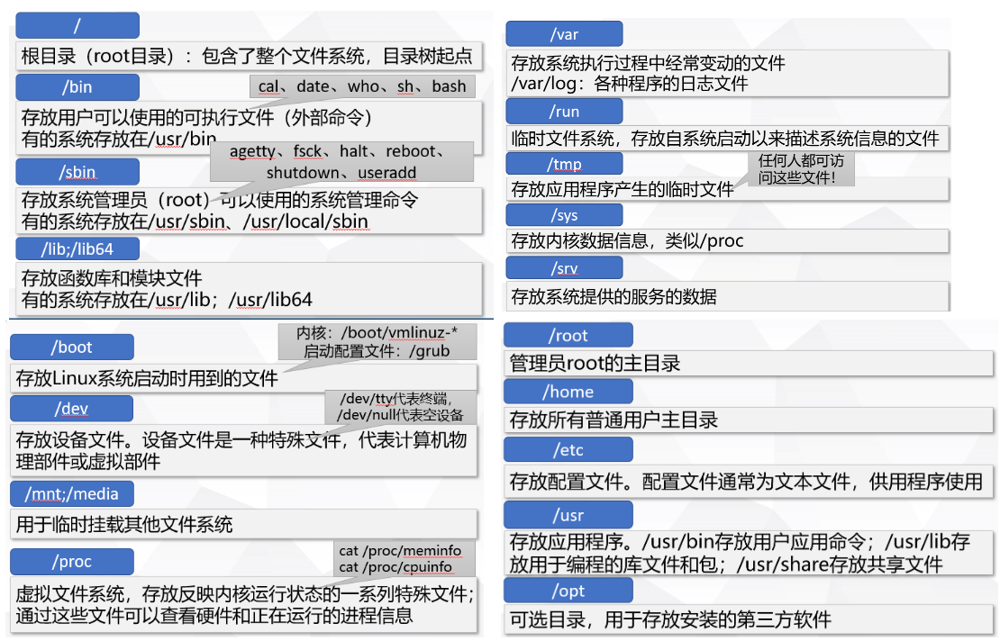
用户登录时，主动进入主目录，主目录名称通常与用户名相同
用户在其主目录下拥有读、写、执行权限
用户在其主目录下可以创建多个子目录
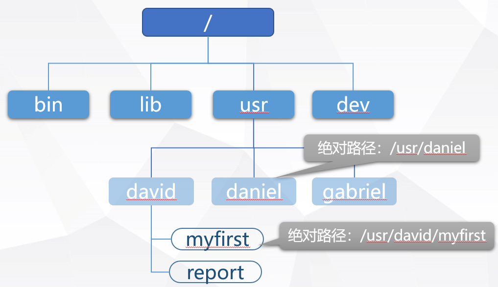
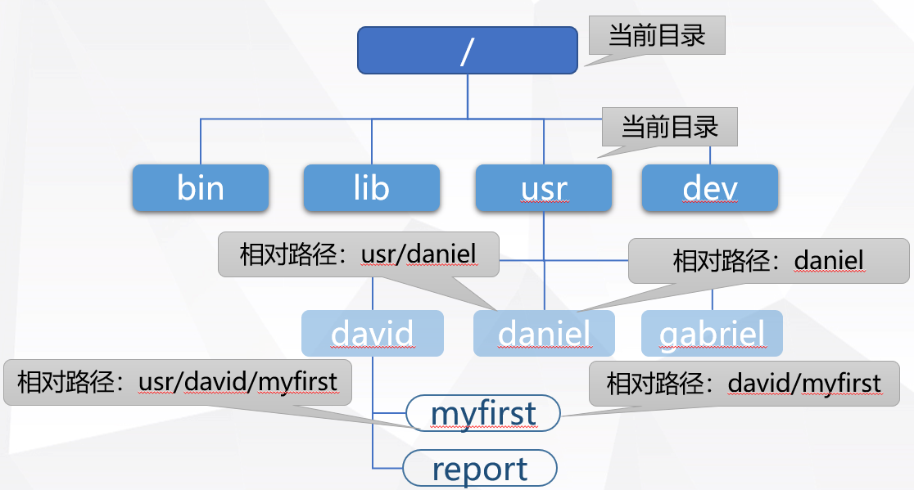
点（.）表示当前目录
点点（..）表示当前目录的父目录
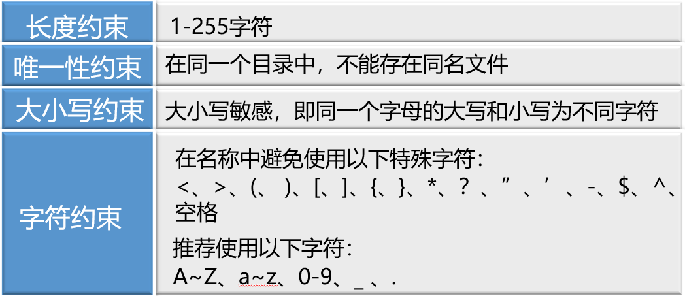
$pwd
/home/c21191511/work
格式：cd [目录] (绝对路径/相对路径)
$cd /
$pwd
/
root用户，cd ~ 相当于 cd /root
普通用户，cd ~ 相当于cd /home/当前用户名
$echo $HOME
/home/c21191511
$cd ~c09190717
-bash: cd: /home/c09190717: Permission denied
$cd /home/c09190717
-bash: cd: /home/c09190717: Permission denied
格式：mkdir dir dir2
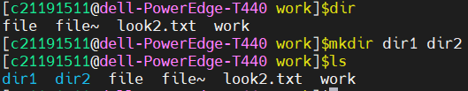
$mkdir -p xx/yy/zz
格式：rm file
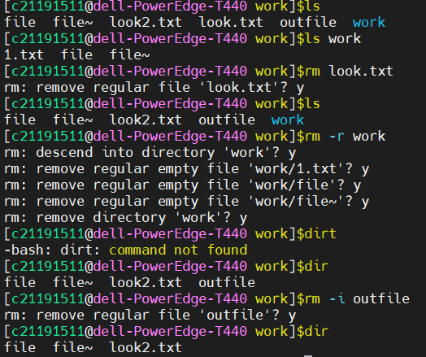
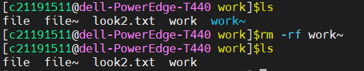
格式：rmdir dir(只能为空目录)
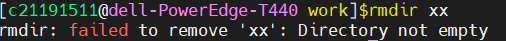
格式：ls dir
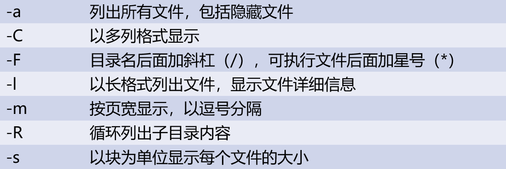
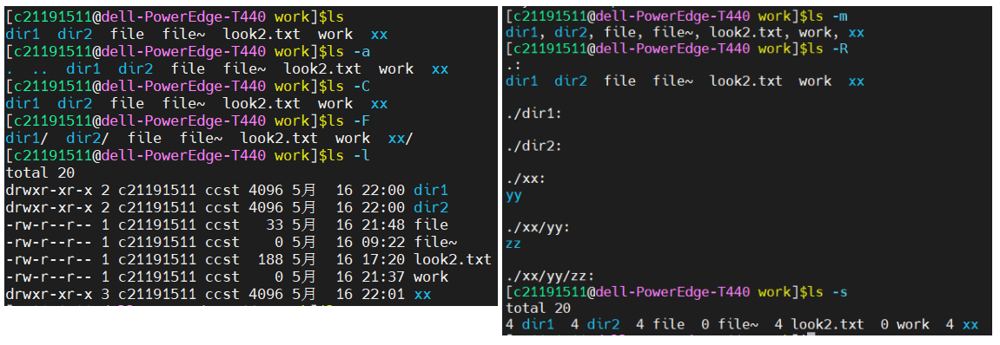
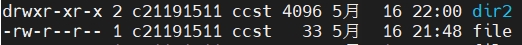
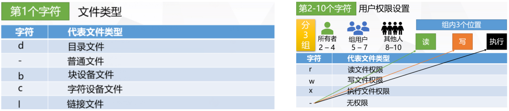
通常与文件创建者用户名相同
文件所有者发生转移，则两者不同
管理员创建的用户时，指定用户属于哪个组
用户创建文件时，文件属于用户的组
command > filename 覆盖重定向 (不存在则创建)
command >> filename 追加重定向 (不存在则创建)
command < filename 命令行中使用
command << filename 脚本编程使用
标准输入读入 输出标准输出
Ctrl + D结束
$cat < filename
$cat -n filename #显示行号
1 Hello world
2 study hard
$cat > filename
Hello world
$cat >> filename
Hello world
$cat filename > filename2
格式： command source target
$cp profile profile2
$cp /etc/profile profile2
$cp profile profile
file cannot be copied onto itself
$cp profile dir
$cp profile profile2 profile3 dir
$cp -i Report memos cp: overwrite 'memos/Report' ? (y/n)
$ls memos Report $cp -b Report memos $ls memos Report Report~ #(内容与原 memos 内的 Report 内容相同)
$cp -r ./memos ./memos~ #创建目录副本
格式： command source target
$mv Report memos
$mv Report Report~$mv dir dir~
$mv file file2 dir
$mv -i Report memos mv: overwrite 'memos/Report' ? (y/n)
$mv -b Report memos$ls memosReport Report~ #(内容与原 memos 内的 Report 内容相同)
$mv -v Report memos Report -> memos/Report
$ mv -f Report memos
格式： command source target
ln命令 在 已存在文件 和 新文件名 之间创建链接
在不同目录中频繁操作同一文件
在每个目录中建立该文件的链接文件 通过链接文件对原文件进行操作
链接文件不占用过多磁盘空间
$ln xxx yyy
$ln file file2 dir
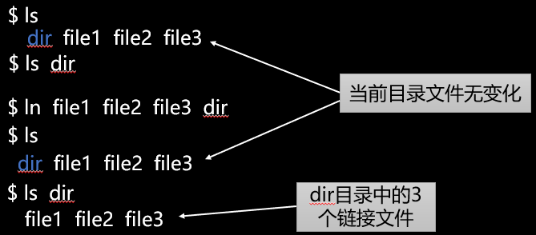
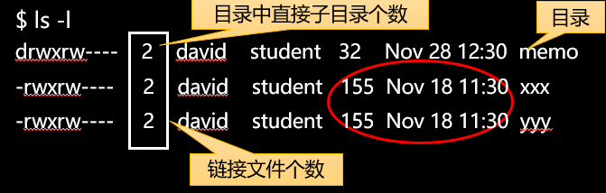
硬链接
软链接（符号链接）
wc命令计算一个或多个文件的行数，字数，字符数
字：没有空格,Tab 分割的字符串
$wc myfirst 4 30 155 myfirst #行 字 字符
$wc Hello world！
$wc file file21 2 3 file2 3 4 file23 5 7 total
$wc -l file
$wc -c file
$wc -w file
$ls report report2 report22 2report$ls report? report2 $ls reprot?? report22 $ls ?report 2report
$ls report 23report 2report2$ls *report report 23report$ls 2*2 2report2
$ls report areport breport aa1 aa2 aa3$ls [ab]* areport breport aa1 aa2 aa3$ls [!ab]* report$ls *[1-3] aa1 aa2 aa3
CentOS 会显示出当前目录内容 与 父目录内容
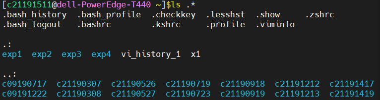
与其他命令组合使用
$rm *.*
$rm report?
$cp * ../backup
$mv file[1-4] memos
$rm report* # 删除格式为reportxxx的文件
$rm report * # 删除report下所有文件
格式： find 路径名 搜索选项 动作选项
在层次目录中根据文件名或文件属性定位文件，并执行操作。
$find . -name "*.c" -print
./1.c
./2.c
b：代表 512 位元组的区块（默认单位为 b）
c：表示字节数
k：表示KB （1024字节）
w：字 （2字节）
M：兆字节（1024KB）
G：千兆字节 （1024MB）
$find . -size 20c -print
b：块设备文件。
d：目录。
c：字符设备文件。
l：符号链接文件。
f：普通文件。
$find . -type f -print
n指据上一次访问所经过的天数(整数) ， +n 表示大于n ，-n 表示小于n
$find . -atime 1 -print #24小时之外 48小时之内
$find . -atime -1 -print #24小时之内
$find . -atime +1 -print #48小时之外
n指文件最后被修改后经过的天数(整数) ， +n 表示大于n ，-n 表示小于n
$find . -mtime 1 -print #24小时之外 48小时之内
$find . -mtime -1 -print #24小时之内
$find . -mtime +1 -print #48小时之外
$find , -newer first.c -print
$find $HEME -name first.c -print
/usr/david/first.c
/usr/david/source/first.c
$find . -name first.c -mtime +90 -exec rm {} \;
$find . -name first.c -mtime +90 -ok rm {} \;
格式：head 文件名
显示文件头部若干行
$head memo (默认显示MEMO前10行)
$head -5 MEMO (显示MEMO前5行)
$head -5 file[1-3](显示多个文件)
格式：tail 文件名
显示文件尾部若干行
$tail memo (默认显示MEMOb后10行)
$tail -5 MEMO (显示MEMO后5行)
$tail -5 file[1-3](显示多个文件)
格式：cut 选项 文件名
从文件中”取出“指定域
默认为Tab(制表符)
空格 与 有意义字符需要用 “” 括起来
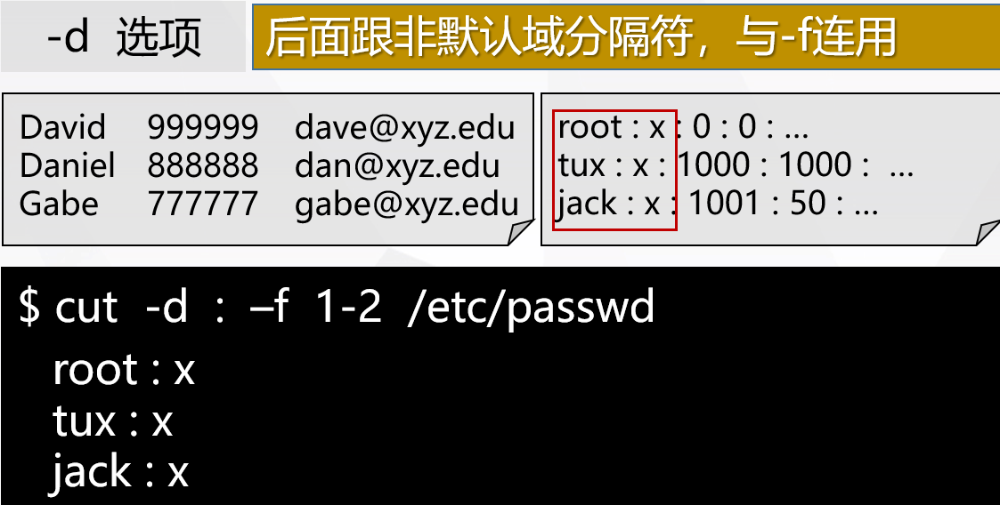
格式：paste file file2
逐行连接两个或多个文件
$paste -d : file file2
1:2
3:4
$paste -d " " file file2
1 2
3 4
格式：more 文件名
分页查看文件内容
在画面下方显示 [Press space to continue, ‘q’ to quit.]
如果使用者按错键，则会显示 [Press ‘h’ for instructions.]
格式：less 文件名
分页查看文件内容，允许在文件中向后 向前移动
UNIX系统将每个文件名与一个整数(i 节点号)相关联,并用文件的i节点号 标识每个文件
表面： 用户通过文件名，打开文件
实际：系统找到文件名对应的i节点号， 通过i节点号找到文件的i节点项，再根据i节点项信息找到文件数据所在块(block)，读出数据
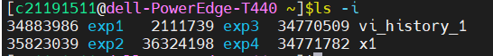
复制，不改变文件i节点号
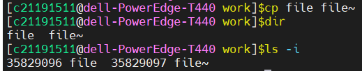
重命名，不改变文件i节点号
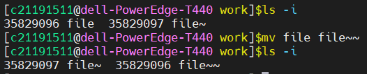
移动，不改变文件i节点号
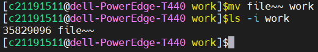
链接，不改变文件i节点号
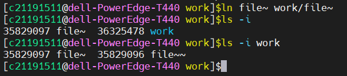
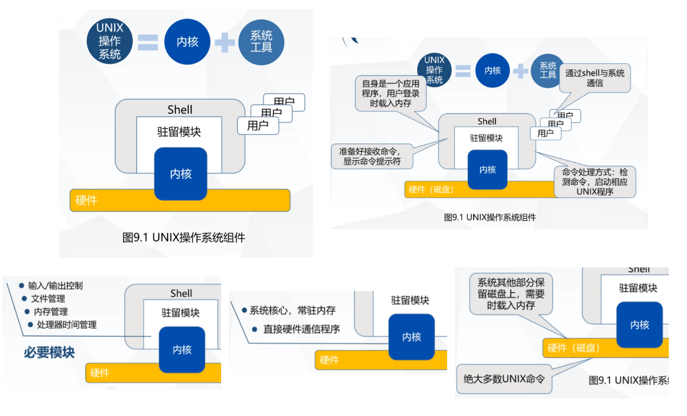
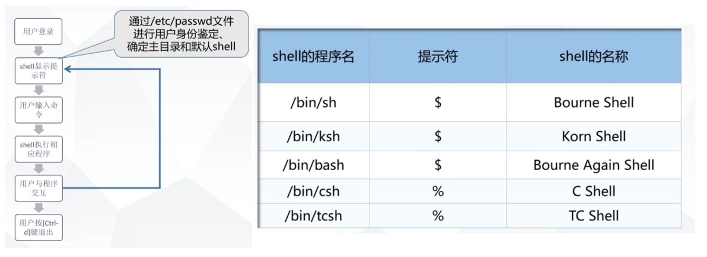
用户成功登录系统：Shell 启动
用户退出：Shell 进程结束
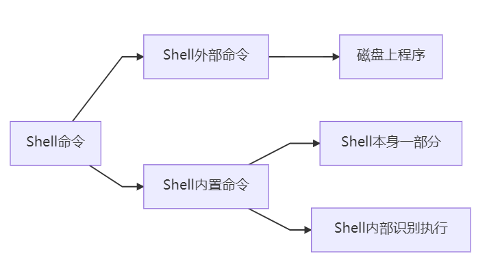
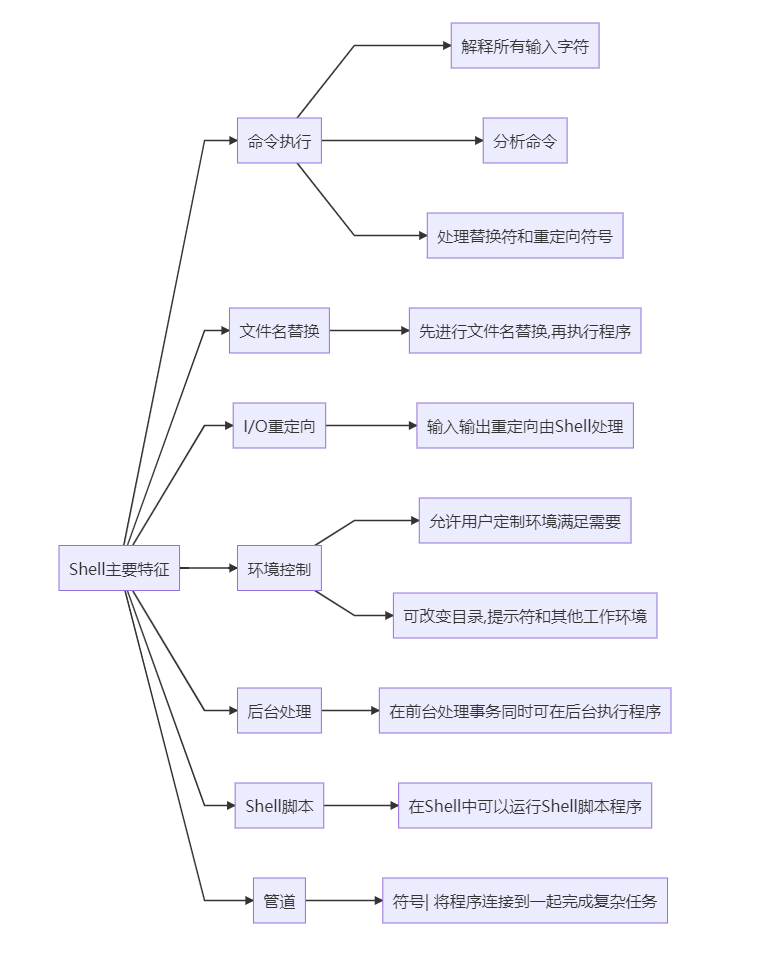
将消息参数显示在终端上，没有参数则输出空行.
echo参数可以无限长
$echo hello
hello
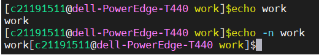
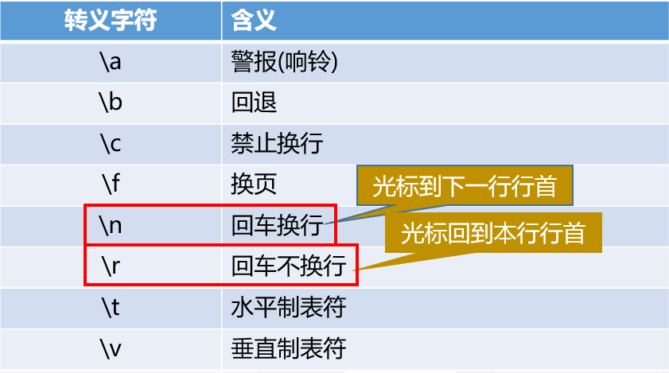
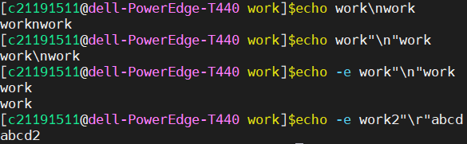
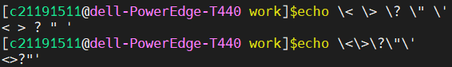
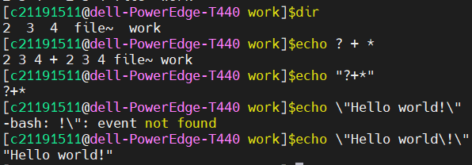
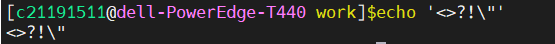
Shell 为响应客户请求，保存一些信息到Shell变量中
变量有名称，可以通过赋值来控制或定制系统环境
查看当前使用的Shell变量
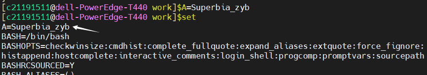
删除不需要的变量
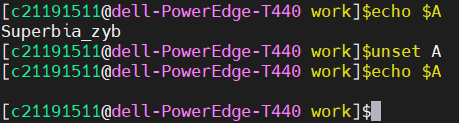
变量名=变量值(字符串) 等号左右不能有空格
变量前加’$’ 使用echo命令显示变量值
$name="Hello world"
$age=10
$echo $age
10
做不到将转义字符赋值给变量 再使用echo输出
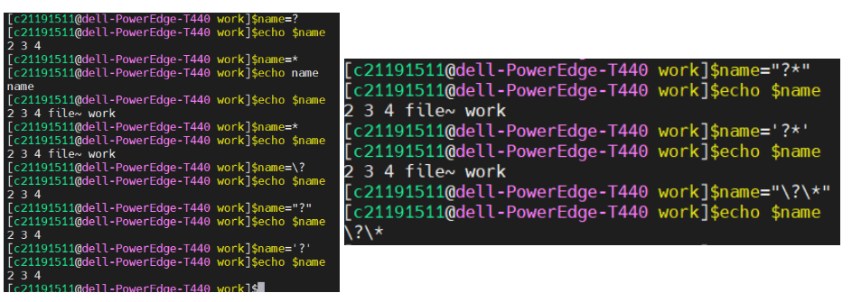
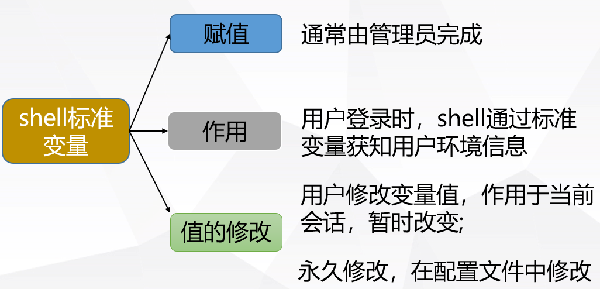
保存用户主目录； 用于其他命令定位主目录
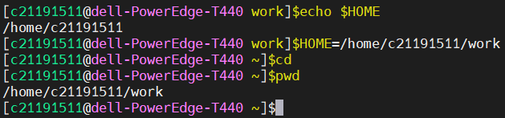
设置Shell 定位命令(程序) 时所要查找的目录名
路径串中以 : 分隔
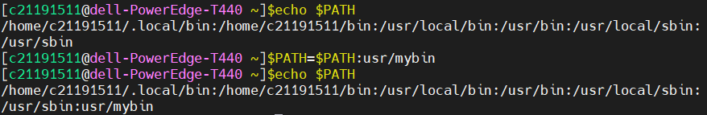
设置作为Shell顶层命令提示符的字符串
PS1=”提示符”
可以对不同段设置不同颜色
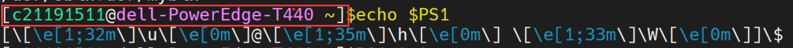
[\[\e[1;32m\]\u\[\e[0m\]@\[\e[1;35m\]\h\[\e[0m\] \[\e[1;33m\]\W\[\e[0m\]]\$
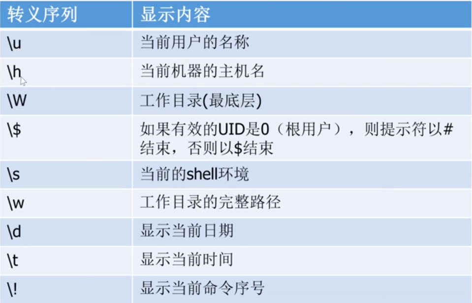
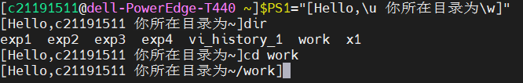
命令提示符2
用户尚未输入完命令前 按下[Return] 后显示的命令提示符 ，默认为 >
设置登录shell的完整路径
设置终端类型
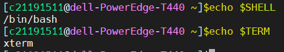
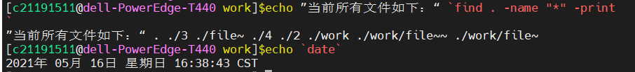
shell 从左往右执行
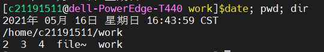
编组命令可以被重定向
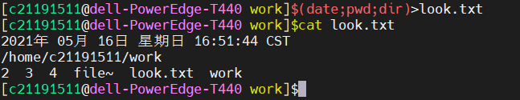
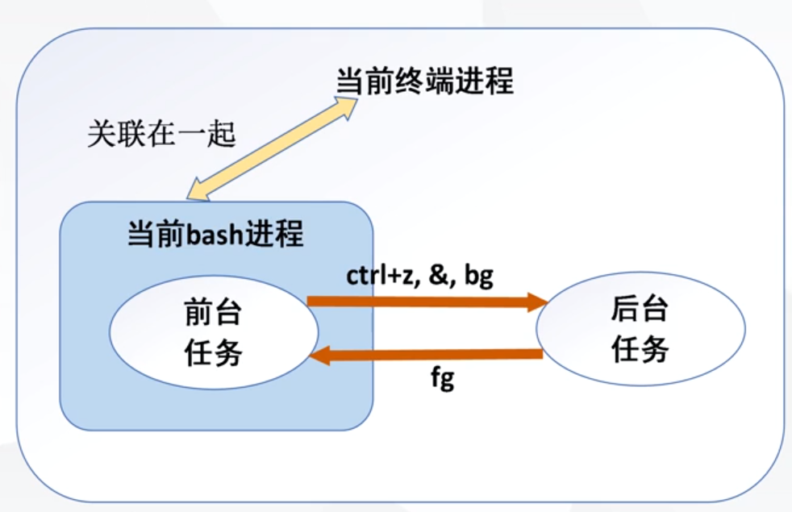
command & command2 &…
（显示分配的进程号 ：1328）
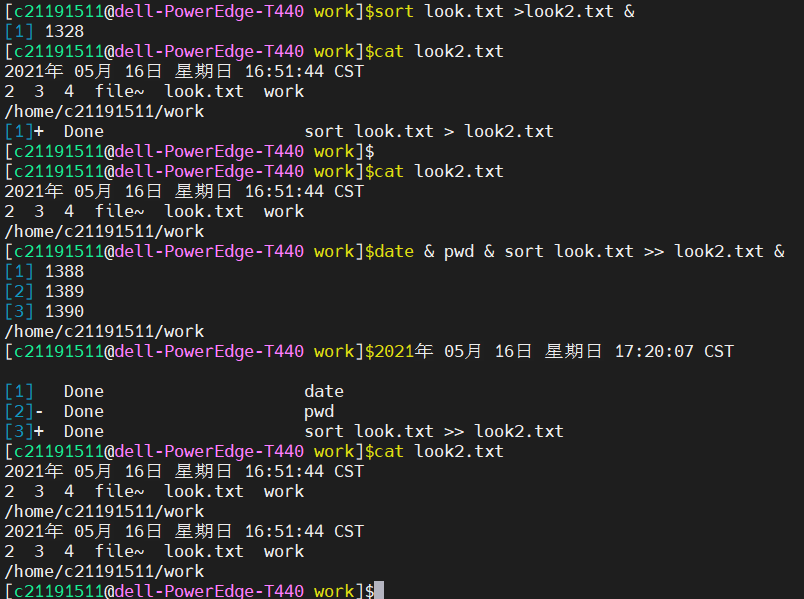
将一个进程的标准输出作为另一个进程的标准输入
command A | command B
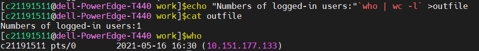
sleep n
PID：进程ID
TTY：控制进程的终端号
TIME：进程已运行的时间(S)
CMD：命令名
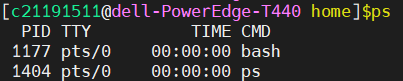
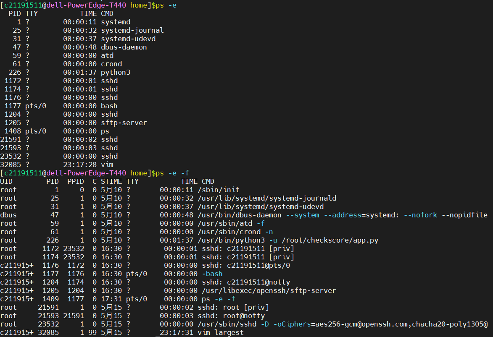
发信号给指定进程，进行进程间通信
$kill -l
1) SIGHUP 2) SIGINT 3) SIGQUIT 4) SIGILL 5) SIGTRAP
6) SIGABRT 7) SIGBUS 8) SIGFPE 9) SIGKILL 10) SIGUSR1
11) SIGSEGV 12) SIGUSR2 13) SIGPIPE 14) SIGALRM 15) SIGTERM
16) SIGSTKFLT 17) SIGCHLD 18) SIGCONT 19) SIGSTOP 20) SIGTSTP
21) SIGTTIN 22) SIGTTOU 23) SIGURG 24) SIGXCPU 25) SIGXFSZ
26) SIGVTALRM 27) SIGPROF 28) SIGWINCH 29) SIGIO 30) SIGPWR
31) SIGSYS 34) SIGRTMIN 35) SIGRTMIN+1 36) SIGRTMIN+2 37) SIGRTMIN+3
38) SIGRTMIN+4 39) SIGRTMIN+5 40) SIGRTMIN+6 41) SIGRTMIN+7 42) SIGRTMIN+8
43) SIGRTMIN+9 44) SIGRTMIN+10 45) SIGRTMIN+11 46) SIGRTMIN+12 47) SIGRTMIN+13
48) SIGRTMIN+14 49) SIGRTMIN+15 50) SIGRTMAX-14 51) SIGRTMAX-13 52) SIGRTMAX-12
53) SIGRTMAX-11 54) SIGRTMAX-10 55) SIGRTMAX-9 56) SIGRTMAX-8 57) SIGRTMAX-7
58) SIGRTMAX-6 59) SIGRTMAX-5 60) SIGRTMAX-4 61) SIGRTMAX-3 62) SIGRTMAX-2
63) SIGRTMAX-1 64) SIGRTMAX
kill [-signal] PID , 信号名/号码 进程号
$kill [-15] 5025 默认信号，正常方式终止进程
$kill -9 5025 强制终止进程
$kill -9 0 #PID为0 终止所有与Shell有关的进程
用户只能终止自己的进程，管理员可以终止任何进程
用户退出系统时，后台进程不被终止
nohup command &
nohup bash -c 'sleep 120; echo "job done" '&
与 | 一起使用
⬇ 输出到屏幕，输出到file
在一个文件 或 一系列文件中查找特定格式(正则表达式 ,RE)
格式：grep pattern file
对文件内容按照字母或数字顺序排序
格式：sort file
前提：文件按相应格式建立，默认为空格或制表符
格式：alias 别名=命令名
格式：unalias 别名
graph LR
A[进程表]
A-->B[进程号]
A-->C[进程状态:就绪/等待]
A-->D[进程等待的事件号]
A-->E[系统数据区地址]